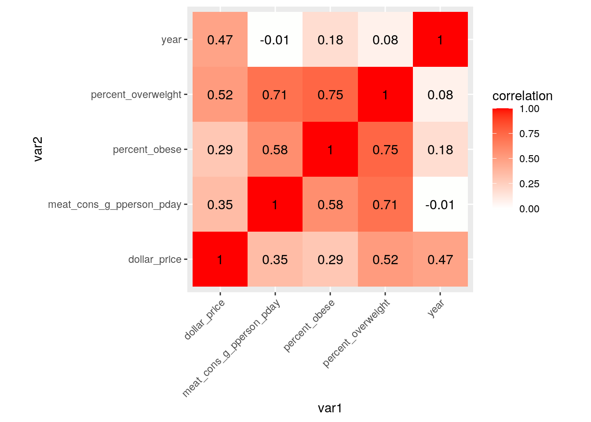
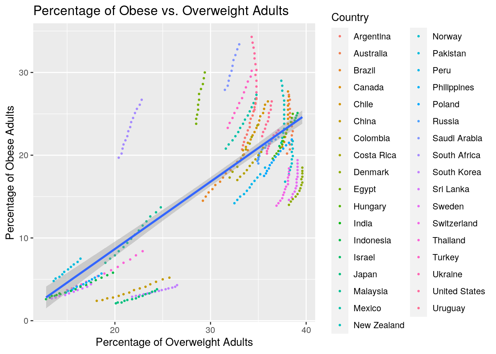
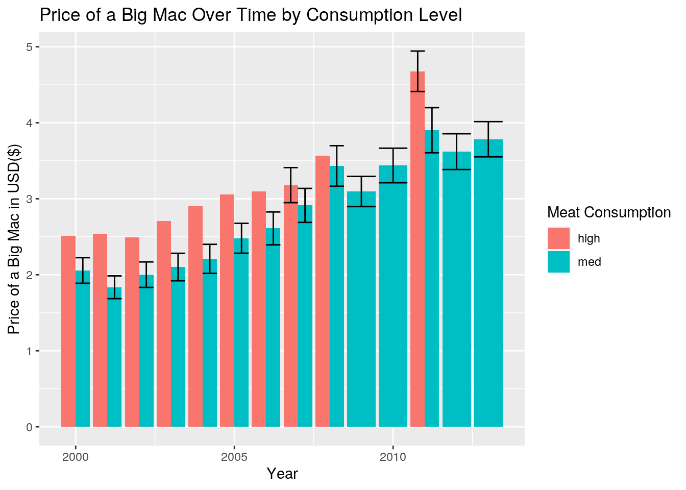
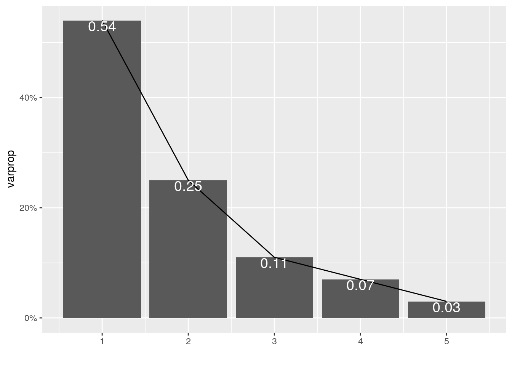
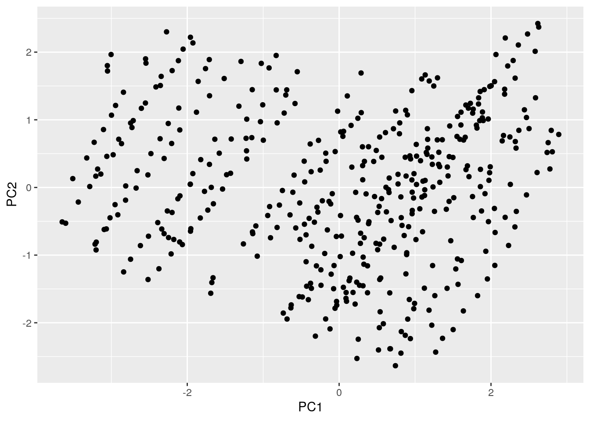
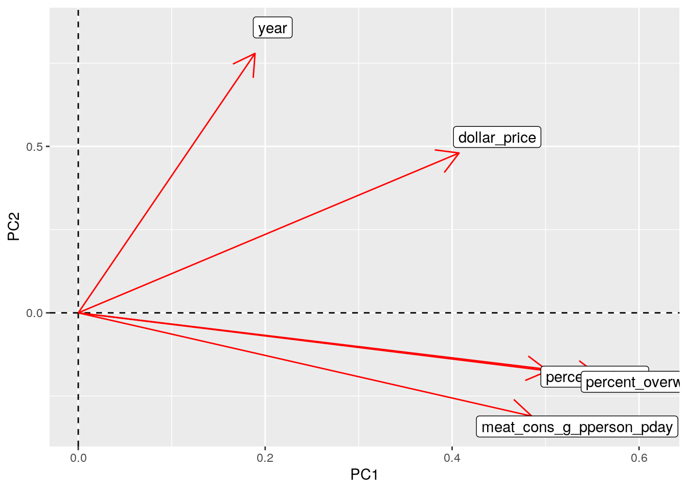

These 4 datasets were found online, mostly on www.ourworldindata.org (all links included at the end). The data on the price of Big Macs was encountered coincidentally and just sounded like something interesting to test for relationships with other variables, based on countries and year.
These datasets depict the average price of a Big Mac burger in a year, the amount of meat consumed in grams per person per day, the percentage of adults who are obese per country, and the percentage of adults who are overweight or obese per country (post data tidying, the percentage of adults who are overweight or obese per country gets separated into 2 variables: just overweight, and overweight or obese).
Throughout my life, I’ve noticed that fast foods tend to be shone in a negative light by society. When I stumbled upon the Big Mac dataset, I wondered if it was possible to calculate whether the price of fast food foods had an influence on how much a population consumed certain macronutrients, which in this case is protein. Would lower Big Mac prices be related to higher amounts of meat consumed? Would lower prices also relate to greater percentages of overweight or obese adults?
I predict strong correlations to exist between low Big Mac prices, high meat consumption, and high percentages of overweight and obese adults. However, while strong correlations may be visible, it should be remembered that there are many factors affecting these values that we can’t see from looking at data. We don’t know the perspective a country’s population and culture has on fast food in their country. We also don’t know the differences in food standards that vary by country. In one country, Big Mac prices may be low and indicative of high meat consumption, but percentages of overweight and obese adults may be very low. Lifestyle factors, such as walking instead of driving to destinations, can also affect these relationships. It should be kept in mind that there is always more to be considered.
library(tidyverse)
big_mac <- read_csv("big-mac-full-index.csv")
share_overweight <- read_csv("share-of-adults-who-are-overweight.csv")
share_obesity <- read_csv("share-of-adults-defined-as-obese.csv")
daily_meat_cons <- read_csv("daily-meat-consumption-per-person.csv")# clean big_mac dataset
big_mac <- big_mac %>% separate(date, into = c("year", "month"),
convert = T) %>% rename(country_3_code = iso_a3) %>% filter(year <=
"2013") %>% filter(month > "1") %>% select(year, country_3_code,
name, dollar_price)
# clean overweight dataset
share_overweight <- share_overweight %>% rename(percent_overweight_obese = Prevalence_of_overweight) %>%
filter(Year >= "2000") %>% filter(Year <= "2013")
# clean obesity dataset
share_obesity <- share_obesity %>% rename(percent_obese = Prevalence_of_obesity) %>%
filter(Year >= "2000") %>% filter(Year <= "2013")
# clean meat consumption dataset
daily_meat_cons <- daily_meat_cons %>% filter(Year >= "2000") %>%
filter(Year <= "2013")# join obesity and overweight datasets
overweight_obesity <- left_join(share_overweight, share_obesity,
by = c("Entity", "Year", "Code"))
# join big mac and daily meat consumption datasets. clean
bigmac_meatcons <- left_join(big_mac, daily_meat_cons, by = c(name = "Entity",
year = "Year")) %>% select(!Code)
# join all datasets
full_project_data <- left_join(bigmac_meatcons, overweight_obesity,
by = c(name = "Entity", year = "Year")) %>% select(!Code) %>%
na.omit()
full_project_data %>% glimpse()## Rows: 431
## Columns: 7
## $ year <dbl> 2000, 2000, 2000, 2000, 2000, 2000, 2000, 20…
## $ country_3_code <chr> "ARG", "AUS", "BRA", "CAN", "CHE", "CHL", "C…
## $ name <chr> "Argentina", "Australia", "Brazil", "Canada"…
## $ dollar_price <dbl> 2.500000, 1.541667, 1.648045, 1.938776, 3.47…
## $ meat_cons_g_pperson_pday <dbl> 270.5750, 304.3318, 216.4052, 277.4798, 196.…
## $ percent_overweight_obese <dbl> 54.0, 58.2, 43.7, 57.8, 50.8, 54.0, 20.5, 52…
## $ percent_obese <dbl> 20.7, 20.2, 14.5, 20.5, 13.9, 20.6, 2.4, 14.…# summary statistics
full_project_data %>% summarize_all(mean)## # A tibble: 1 x 7
## year country_3_code name dollar_price meat_cons_g_ppe… percent_overwei…
## <dbl> <dbl> <dbl> <dbl> <dbl> <dbl>
## 1 2007. NA NA 2.92 167. 47.9
## # … with 1 more variable: percent_obese <dbl>full_project_data %>% summarize_all(sd)## # A tibble: 1 x 7
## year country_3_code name dollar_price meat_cons_g_ppe… percent_overwei…
## <dbl> <dbl> <dbl> <dbl> <dbl> <dbl>
## 1 3.89 NA NA 1.38 82.1 15.7
## # … with 1 more variable: percent_obese <dbl>full_project_data %>% select(name, dollar_price, meat_cons_g_pperson_pday,
percent_overweight_obese, percent_obese) %>% group_by(name) %>%
summarize_all(mean) %>% arrange(desc(meat_cons_g_pperson_pday))## # A tibble: 35 x 5
## name dollar_price meat_cons_g_pperson… percent_overweight… percent_obese
## <chr> <dbl> <dbl> <dbl> <dbl>
## 1 United S… 3.32 332. 64.6 30.0
## 2 Australia 2.96 313. 62.1 23.7
## 3 New Zeal… 3.02 291. 62.8 25.2
## 4 Canada 3.35 264. 62.0 24.1
## 5 Israel 3.73 263. 62.1 23.6
## 6 Argentina 2.74 262. 57.8 23.7
## 7 Brazil 3.35 230. 49.0 17.5
## 8 Hungary 2.89 225. 59.7 22.1
## 9 Denmark 4.53 214. 55.4 16.2
## 10 Sweden 4.72 212. 55.8 16.9
## # … with 25 more rowsfull_project_data %>% select(year, dollar_price, meat_cons_g_pperson_pday,
percent_overweight_obese, percent_obese) %>% group_by(year) %>%
summarize_all(mean)## # A tibble: 14 x 5
## year dollar_price meat_cons_g_pperson_p… percent_overweight_o… percent_obese
## <dbl> <dbl> <dbl> <dbl> <dbl>
## 1 2000 2.08 185. 44.7 14.7
## 2 2001 1.87 178. 43.5 14.3
## 3 2002 2.02 176. 45.6 15.3
## 4 2003 2.13 169. 45.6 15.7
## 5 2004 2.23 153. 46.0 16.1
## 6 2005 2.50 156. 46.7 16.5
## 7 2006 2.63 159. 47.3 16.9
## 8 2007 2.93 164. 47.9 17.4
## 9 2008 3.44 165. 48.6 17.8
## 10 2009 3.10 165. 49.6 18.4
## 11 2010 3.44 168. 50.2 18.8
## 12 2011 3.95 168. 49.9 18.8
## 13 2012 3.62 172. 50.3 19.1
## 14 2013 3.78 171. 51.2 19.6full_project_data %>% mutate(meat_cons_pctile = ntile(meat_cons_g_pperson_pday,
100)) %>% mutate(overweight_pctile = ntile(percent_overweight_obese,
100)) %>% mutate(obesity_pctile = ntile(percent_obese, 100)) %>%
select(year, name, meat_cons_pctile, overweight_pctile, obesity_pctile)## # A tibble: 431 x 5
## year name meat_cons_pctile overweight_pctile obesity_pctile
## <dbl> <chr> <int> <int> <int>
## 1 2000 Argentina 87 40 52
## 2 2000 Australia 94 66 49
## 3 2000 Brazil 73 26 26
## 4 2000 Canada 90 64 51
## 5 2000 Switzerland 59 31 25
## 6 2000 Chile 52 40 52
## 7 2000 China 25 6 1
## 8 2000 Denmark 57 34 25
## 9 2000 Hungary 84 52 46
## 10 2000 Indonesia 3 1 2
## # … with 421 more rowsfull_project_data %>% group_by(name) %>% mutate(cum_mean_meat_cons = cummean(meat_cons_g_pperson_pday)) %>%
select(year, name, cum_mean_meat_cons)## # A tibble: 431 x 3
## # Groups: name [35]
## year name cum_mean_meat_cons
## <dbl> <chr> <dbl>
## 1 2000 Argentina 271.
## 2 2000 Australia 304.
## 3 2000 Brazil 216.
## 4 2000 Canada 277.
## 5 2000 Switzerland 196.
## 6 2000 Chile 178.
## 7 2000 China 123.
## 8 2000 Denmark 191.
## 9 2000 Hungary 258.
## 10 2000 Indonesia 22.9
## # … with 421 more rows# making a categorical variable from a numerical variable
full_project_data %>% summarize(mean(meat_cons_g_pperson_pday))## # A tibble: 1 x 1
## `mean(meat_cons_g_pperson_pday)`
## <dbl>
## 1 167.full_project_data %>% summarize(sd(meat_cons_g_pperson_pday))## # A tibble: 1 x 1
## `sd(meat_cons_g_pperson_pday)`
## <dbl>
## 1 82.1qnorm(p = 0.0015, mean = 166.8963, sd = 82.07575)## [1] -76.68302qnorm(p = 0.025, mean = 166.8963, sd = 82.07575)## [1] 6.030786qnorm(p = 0.16, mean = 166.8963, sd = 82.07575)## [1] 85.27542qnorm(p = 0.84, mean = 166.8963, sd = 82.07575)## [1] 248.5172qnorm(p = 0.975, mean = 166.8963, sd = 82.07575)## [1] 327.7618qnorm(p = 0.9985, mean = 166.8963, sd = 82.07575)## [1] 410.4756full_project_data <- full_project_data %>% mutate(meat2 = case_when(meat_cons_g_pperson_pday >
327.7618 ~ "high", meat_cons_g_pperson_pday <= 327.7618 &
6.030786 <= meat_cons_g_pperson_pday ~ "med", meat_cons_g_pperson_pday <
6.030786 ~ "low"))
full_project_data %>% summarize(n_distinct(meat2))## # A tibble: 1 x 1
## `n_distinct(meat2)`
## <int>
## 1 2# making a numerical variable (explanation below the heatmap)
full_project_data <- full_project_data %>% mutate(percent_overweight = percent_overweight_obese -
percent_obese)
# correlation matrix
p_cormat <- full_project_data %>% select_if(is.numeric) %>% select(!percent_overweight_obese) %>%
cortidycor <- p_cormat %>% as.data.frame %>% rownames_to_column("var1") %>%
pivot_longer(-1, names_to = "var2", values_to = "correlation")
tidycor %>% ggplot(aes(var1, var2, fill = correlation)) + geom_tile() +
scale_fill_gradient2(low = "green", mid = "white", high = "red") +
geom_text(aes(label = round(correlation, 2)), color = "black",
size = 4) + theme(axis.text.x = element_text(angle = 45,
hjust = 1)) + coord_fixed()
Year seems to have mostly low correlation with other variables, and surprisingly, the price of a Big Mac burger does not strongly relate to other variables much. The amount of meat consumed in grams per person per day somewhat predicts the percentage of adults in a country who are overweight or obese. As more meat is consumed, and perhaps more calories, weight from muscle or fat may increase. The percentage of overweight adults in a country strongly predicts the percentage of obese adults and vice versa.While creating the correlation matrix for this correlation heatmap, “percent_overweight_obese” was omitted because this percentage includes both percentage of overweight adults and percentage of obese adults per country per year. I didn’t believe this would fit when trying to visualize any correlation it may have with other variables.
ggplot(full_project_data, aes(x = percent_overweight, y = percent_obese)) +
geom_point(aes(color = name), size = 0.5) + geom_smooth(method = "lm") +
xlab("Percentage of Overweight Adults") + ylab("Percentage of Obese Adults") +
ggtitle("Percentage of Obese vs. Overweight Adults") + labs(color = "Country")
This plot illustrates the correlation between percent of overweight adults and percent of obese adults by country. As the percentage of overweight adults begins to increase, the correlation with percentage of obese adults seems to increase as well.ggplot(full_project_data, aes(x = year, y = dollar_price, fill = meat2)) +
geom_bar(stat = "summary", position = "dodge") + geom_errorbar(stat = "summary",
position = "dodge") + xlab("Year") + ylab("Price of a Big Mac in USD($)") +
ggtitle("Price of a Big Mac Over Time by Consumption Level") +
labs(fill = "Meat Consumption")
This bar plot depicts the gradual yearly increase in the average price of a Big Mac burger, and separates each year into whether meat consumption was high or in the middle (values deemed low, or 2 standard deviations and more below the mean, did not exist). While this looks like a strong positive correlation, there are many factors that could have caused this increase such as inflation of the US Dollar. It’s interesting to see that in some years, meat consumption was within 1 standard deviation away from the mean. I wonder what may have caused this. Economic changes? A wave of changing societal views to eat less meat?library(GGally)
PCAp <- full_project_data %>% select(-2, -6)
# selected the variables I want to use
proj_nums <- PCAp %>% select_if(is.numeric) %>% scale
# normalized
rownames(proj_nums) <- PCAp$name
proj_pca <- princomp(proj_nums)
names(proj_pca)## [1] "sdev" "loadings" "center" "scale" "n.obs" "scores" "call"summary(proj_pca, loadings = T)## Importance of components:
## Comp.1 Comp.2 Comp.3 Comp.4 Comp.5
## Standard deviation 1.6410058 1.1112960 0.7451634 0.59826517 0.38383664
## Proportion of Variance 0.5398325 0.2475701 0.1113120 0.07175072 0.02953464
## Cumulative Proportion 0.5398325 0.7874027 0.8987146 0.97046536 1.00000000
##
## Loadings:
## Comp.1 Comp.2 Comp.3 Comp.4 Comp.5
## year 0.189 0.779 0.423 0.350 0.236
## dollar_price 0.407 0.480 -0.624 -0.295 -0.357
## meat_cons_g_pperson_pday 0.485 -0.310 -0.214 0.778 -0.132
## percent_obese 0.502 -0.174 0.619 -0.296 -0.496
## percent_overweight 0.557 -0.188 -0.313 0.744With a high PC1 value, most variables will be high. With a high PC2 value, year will be high meaning later in time, and Big Mac USD price will be high while meat consumption, percent obese, and percent overweight will be low.
eigval <- proj_pca$sdev^2
varprop = round(eigval/sum(eigval), 2)
ggplot() + geom_bar(aes(y = varprop, x = 1:5), stat = "identity") +
xlab("") + geom_path(aes(y = varprop, x = 1:5)) + geom_text(aes(x = 1:5,
y = varprop, label = round(varprop, 2)), vjust = 1, col = "white",
size = 5) + scale_y_continuous(breaks = seq(0, 0.6, 0.2),
labels = scales::percent) + scale_x_continuous(breaks = 1:10)
round(cumsum(eigval)/sum(eigval), 2)## Comp.1 Comp.2 Comp.3 Comp.4 Comp.5
## 0.54 0.79 0.90 0.97 1.00eigval## Comp.1 Comp.2 Comp.3 Comp.4 Comp.5
## 2.6929000 1.2349787 0.5552685 0.3579212 0.1473306I should keep 3 PCs as that is where the cumulative proportion of variance is first greater than 80% and simultaneously where the eigenvalue is greater than 1.
projdf <- data.frame(Name = PCAp$name, PC1 = proj_pca$scores[,
1], PC2 = proj_pca$scores[, 2])
ggplot(projdf, aes(PC1, PC2)) + geom_point()
This plot shows how each observation scores on PC1 and PC2. It seems like a greater proportion of the observations score positively on PC1, and the ones that score negatively are very spread out. It seems to be about the same for PC2 as well, but more centered around 0.Highest scores on PC1.
proj_pca$scores[, 1:4] %>% as.data.frame %>% top_n(3, Comp.1)## Comp.1 Comp.2 Comp.3 Comp.4
## Australia.11 2.807615 0.5270774 -0.3364424 0.8898438
## Australia.13 2.793512 0.8435317 0.1412230 0.9745112
## United.States.13 2.892444 0.7835060 0.7053352 0.8720729PCAp %>% filter(name == "Australia", year == "2011")## # A tibble: 1 x 7
## year name dollar_price meat_cons_g_ppe… percent_obese meat2 percent_overwei…
## <dbl> <chr> <dbl> <dbl> <dbl> <chr> <dbl>
## 1 2011 Aust… 4.94 332. 26.2 high 38.2PCAp %>% filter(name == "Australia", year == "2013")## # A tibble: 1 x 7
## year name dollar_price meat_cons_g_ppe… percent_obese meat2 percent_overwei…
## <dbl> <chr> <dbl> <dbl> <dbl> <chr> <dbl>
## 1 2013 Aust… 4.62 318. 27.3 med 38.2PCAp %>% filter(name == "United States", year == "2013")## # A tibble: 1 x 7
## year name dollar_price meat_cons_g_ppe… percent_obese meat2 percent_overwei…
## <dbl> <chr> <dbl> <dbl> <dbl> <chr> <dbl>
## 1 2013 Unit… 4.56 315. 34.3 med 34.3Lowest scores on PC1.
proj_pca$scores[, 1:4] %>% as.data.frame %>% top_n(-3, Comp.1)## Comp.1 Comp.2 Comp.3 Comp.4
## Indonesia -3.601281 -0.5286534 -0.8102692 -0.5644193
## Indonesia.1 -3.647409 -0.5092405 -0.4792548 -0.3874402
## Sri.Lanka -3.507760 0.1307468 -0.1745360 -0.1863511PCAp %>% filter(name == "Indonesia", year == "2000")## # A tibble: 1 x 7
## year name dollar_price meat_cons_g_ppe… percent_obese meat2 percent_overwei…
## <dbl> <chr> <dbl> <dbl> <dbl> <chr> <dbl>
## 1 2000 Indo… 1.83 22.9 2.6 med 12.8PCAp %>% filter(name == "Indonesia", year == "2001")## # A tibble: 1 x 7
## year name dollar_price meat_cons_g_ppe… percent_obese meat2 percent_overwei…
## <dbl> <chr> <dbl> <dbl> <dbl> <chr> <dbl>
## 1 2001 Indo… 1.35 23.8 2.8 med 13.2PCAp %>% filter(name == "Sri Lanka", year == "2000")## # A tibble: 0 x 7
## # … with 7 variables: year <dbl>, name <chr>, dollar_price <dbl>,
## # meat_cons_g_pperson_pday <dbl>, percent_obese <dbl>, meat2 <chr>,
## # percent_overweight <dbl>Highest scores on PC2.
proj_pca$scores[, 1:4] %>% as.data.frame %>% top_n(3, wt = Comp.2)## Comp.1 Comp.2 Comp.3 Comp.4
## Norway.8 2.628636 2.370734 -1.8562730 -1.09103353
## Sri.Lanka.9 -2.272809 2.300176 0.2564614 0.09610689
## Norway.10 2.616924 2.423196 -1.2439449 -0.64555015PCAp %>% filter(name == "Norway", year == "2008")## # A tibble: 1 x 7
## year name dollar_price meat_cons_g_ppe… percent_obese meat2 percent_overwei…
## <dbl> <chr> <dbl> <dbl> <dbl> <chr> <dbl>
## 1 2008 Norw… 7.88 189. 19.5 med 38.5PCAp %>% filter(name == "Sri Lanka", year == "2009")## # A tibble: 1 x 7
## year name dollar_price meat_cons_g_ppe… percent_obese meat2 percent_overwei…
## <dbl> <chr> <dbl> <dbl> <dbl> <chr> <dbl>
## 1 2009 Sri … 1.83 17.1 3.5 med 15.7PCAp %>% filter(name == "Norway", year == "2010")## # A tibble: 1 x 7
## year name dollar_price meat_cons_g_ppe… percent_obese meat2 percent_overwei…
## <dbl> <chr> <dbl> <dbl> <dbl> <chr> <dbl>
## 1 2010 Norw… 7.20 181. 20.4 med 38.5Lowest scores on PC2.
proj_pca$scores[, 1:4] %>% as.data.frame %>% top_n(3, wt = desc(Comp.2))## Comp.1 Comp.2 Comp.3 Comp.4
## Australia 0.7413872 -2.634646 -0.3461792 0.5817787
## Hungary 0.2345065 -2.527649 -0.1100066 0.2951907
## Australia.1 0.8140718 -2.449141 -0.1840702 0.6200546PCAp %>% filter(name == "Australia", year == "2000")## # A tibble: 1 x 7
## year name dollar_price meat_cons_g_ppe… percent_obese meat2 percent_overwei…
## <dbl> <chr> <dbl> <dbl> <dbl> <chr> <dbl>
## 1 2000 Aust… 1.54 304. 20.2 med 38PCAp %>% filter(name == "Hungary", year == "2000")## # A tibble: 1 x 7
## year name dollar_price meat_cons_g_ppe… percent_obese meat2 percent_overwei…
## <dbl> <chr> <dbl> <dbl> <dbl> <chr> <dbl>
## 1 2000 Hung… 1.22 258. 19.6 med 36.5PCAp %>% filter(name == "Australia", year == "2001")## # A tibble: 1 x 7
## year name dollar_price meat_cons_g_ppe… percent_obese meat2 percent_overwei…
## <dbl> <chr> <dbl> <dbl> <dbl> <chr> <dbl>
## 1 2001 Aust… 1.52 301. 20.7 med 38.3proj_pca$loadings[1:5, 1:2] %>% as.data.frame %>% rownames_to_column %>%
ggplot() + geom_hline(aes(yintercept = 0), lty = 2) + geom_vline(aes(xintercept = 0),
lty = 2) + ylab("PC2") + xlab("PC1") + geom_segment(aes(x = 0,
y = 0, xend = Comp.1, yend = Comp.2), arrow = arrow(), col = "red") +
geom_label(aes(x = Comp.1 * 1.1, y = Comp.2 * 1.1, label = rowname))
All variables positively contribute to PC1, but meat consumption, percent of overweight adults, and percent of obese adults contribute the most. Year and Big Mac USD price contribute positively to PC2 while meat consumption, percent obese, and percent overweight contribute negatively to PC2.